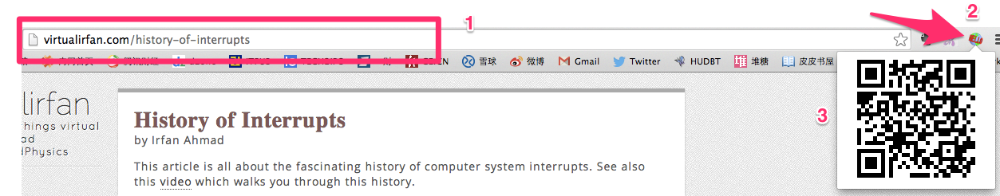
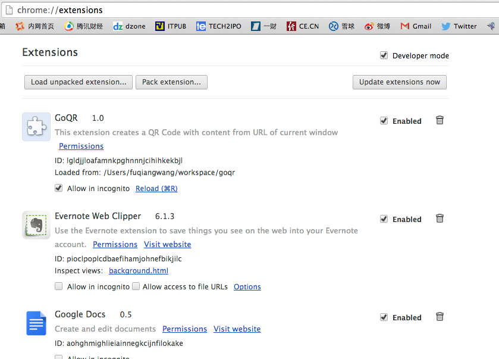

自用二维码Chrome插件/扩展 (A Chrome Extension of QR Code)
FuqiangWang
经常在电脑上看到很多比较不错的内容想要分享到微信朋友圈， 原来个人比较笨的做法是，如果这个内容我也想同时分享到微博，那么，就在电脑上发布，然后通过手机上的微博客户端再Copy或者分享到微博朋友圈， 但如果只想定向分享到朋友圈的时候， 做简单的方式可能是直接拍张照， 但这别人是不友好的，人家没法看一下照片，在手机浏览器里输入一个字符，甚至如果有图像识别能够提取拍到的URL也可以，只是技术难度大， 估计也没有这种小工具； 如果有一些文件同步的应用，也可以通过粘贴文本然后同步到手机再分享，但流程依然复杂； 所以，我现在是拷贝URL，然后到某些生成二维码的网站，生成二维码，自己用手机扫了再分享。
不过， 拷贝，打开二维码网站，粘贴这样的动作对懒人来说也挺烦，所以，就想到了借助chrome扩展机制， 在地址栏边上一点击， 二维码直接显示出来就好了， 故此有了这个小东西。
过程与成果
首先当然是问问google老师怎么搞了， 搜到Getting Started: Building a Chrome Extension， 将sample下载下来， 然后根据情况进行更改， 查文档， 试验， 最终捣鼓出来， 放在https://github.com/fujohnwang/goqr, 有需要的客官可以自己git clone下来用， 就不作正式发布了。
效果如下: 
安装使用
不想发布到google的store里面， 所以， 各位客官如果要用，简单说一下安装和使用的过程吧！
可以直接git clone https://github.com/fujohnwang/goqr.git 下来， 或者直接下载（“Download ZIP”）并解压, 在Chrome地址栏输入：
chrome://extensions

选择右上角的”Developer mode”, 之后点击“load unpacked extension…”按钮， 然后选择下载到本地的扩展的目录即可， 之后就能看到chrome浏览器地址栏上多了一个图标，安装完成。
对于非开发者来说，安装完后可以将”Developer mode”取消选取
现在，看到那个页面想分享，直接点那个新的按钮吧！
如果哪位客官脑瓜灵光点儿，可以在这个基础上做更多事情哦， 将来发了的话，记得请我吃饭就好，哈哈
Refrence
- Getting Started: Building a Chrome Extension
- https://developer.chrome.com/extensions/overview
- https://developer.chrome.com/extensions/api_index
「为AI疯狂」星球上，扶墙老师正在和朋友们讨论有趣的AI话题，你要不要⼀起来呀？^-^
这里
- 不但有及时新鲜的AI资讯和深度探讨
- 还分享AI工具、产品方法和商业机会
- 更有原价1000多的付费内容(近500分钟)等着你，加入星球(https://t.zsxq.com/0dI3ZA0sL) 即可免费领取!